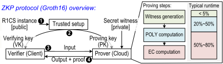
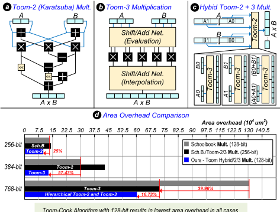
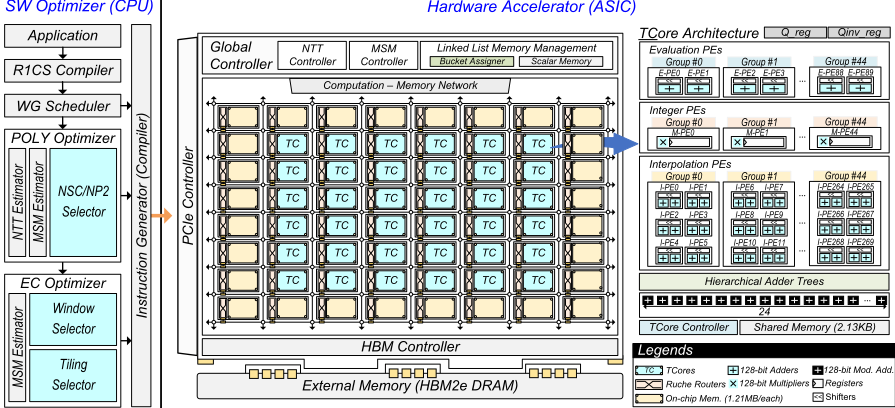
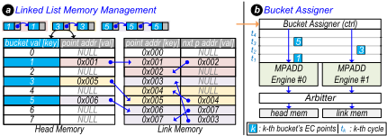
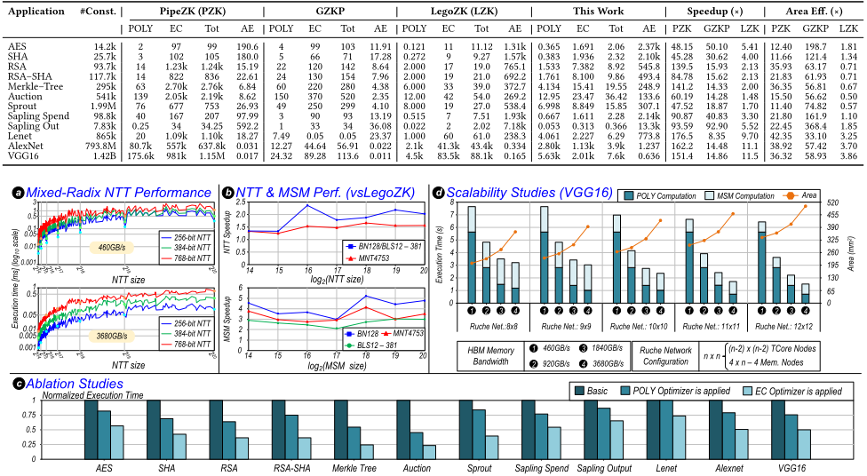

ZK-Flex: A Flexible and Scalable Framework for Accelerating Zero-Knowledge Proofs
ZK-Flex：一个用于加速零知识证明（ZKP）的灵活且可扩展框架
简介
论文针对 Groth16 零知识证明生成中 POLY（NTT）与 EC（MSM）计算合计约占 95% 运行时间、大位宽模乘无法利用 RNS 并行、且 NTT/MSM 串行执行导致利用率失衡的问题，提出软硬协同的 ZK-Flex 加速框架。软件层以 Next Smooth Composite（NSC）填充替代 Next Power-of-Two 填充并配合 mixed-radix NTT 减少 MSM 点数，用解析估计器在 NP2/NSC 及 MSM 窗口/tiling 配置间自动选择端到端最优策略。硬件层采用基于 Toom-Cook 的多精度 TCore（支持 256/384/768-bit），经 8×8 ruche NoC 组合出 radix-2/3/4/5/7/8 NTT 蝶形与 EC 点运算，并以 linked-list 内存机制在有限 bucket 存储下实现多 MPADD 引擎无冲突并行。28nm SystemVerilog 实现加周期级仿真显示：相比 LegoZK 平均加速 5.52×（最高 11.5×），面积效率平均提升 1.85×（最高 3.8×）。对团队而言，其 workload-driven 建模与'周期级仿真+综合数据+Ramulator HBM 模型'的评估流程有方法学借鉴价值，但论文不含任何功能验证内容，与团队内存/互连 IP 产品栈无直接交集。
问题
Groth16 ZKP 证明生成高度计算密集，POLY 与 EC 阶段合计约占 95% 运行时间。硬件加速面临两大挑战：(1) Groth16 使用不可分解为互质小模数的大素数模数（如 BLS12-381 的 381-bit 基域与 255-bit 标量域），无法利用 RNS 并行，需高效支持 256/384/768-bit 多精度模乘；(2) NTT 与 MSM 等大精度 kernel 顺序执行，workload 规模变化会使瓶颈在 POLY 与 EC 之间转移，分离引擎或固定算法映射设计导致利用率低下。现有可重构加速器 ReZK（仅支持到 384-bit）与 LegoZK（位宽更大但面积效率欠佳）在精度可扩展性、算法灵活性与资源效率上均有不足。
方法
软硬协同设计框架。软件层含 WG scheduler、POLY optimizer 与 EC optimizer：POLY optimizer 提出 NSC 填充策略（填充到由小素数因子 {2,3,5,7} 构成的 smooth composite 而非 2 的幂），配合支持 radix-2/3/4/5/7/8 的 mixed-radix NTT 引擎减少 MSM 点数，并用 NTT/MSM 解析估计器评估 NP2 与 NSC 配置、选择端到端最快策略；EC optimizer 基于 Pippenger bucket 算法，用解析模型选择窗口大小并依据内存容量与并行度确定 tiling。硬件层为 ASIC 加速器：TCore 基于 Toom-Cook（256-bit 用 Toom-2、384-bit 用 Toom-3、768-bit 用两级混合 Toom-2/3）配合 Montgomery 乘法实现多精度模乘；多个 TCore 经 ruche NoC 组合为 NTT 蝶形（采用 constant-geometry 结构避免逐级 NoC 重配置）与 EC 点运算；linked-list 内存管理（head memory + link memory + bucket assigner）使多个 MPADD 引擎共享同一窗口与统一 bucket 内存并无冲突更新。
关键结果
相比最优先前设计 LegoZK，证明生成延迟平均加速 5.52×（最高 11.5×）；面积效率平均提升 1.85×（最高 3.8×）
radix-2 NTT 相比 LegoZK 平均加速 1.48×（MNT4-753）与 1.84×（BLS12-381、BN128）；MSM 在 BN128、BLS12-381、MNT4-753 上分别加速 4.16×、2.69×、3.29×
28nm 商用 PDK 综合：36 个 TCore + 28 个 memory node，整芯片 205.512 mm²、1 GHz 下功耗最高 48.520 W；片上 34 MB SRAM，8×8 ruche NoC 全双工二分带宽 4.608 TB/s，假设 460 GB/s HBM 带宽
混合基（composite）规模因内存带宽瓶颈使 NTT 吞吐平均下降约 50%，更高带宽可缓解该降速
可扩展性实验（VGG16 workload）表明规模增大后 off-chip 内存带宽成为瓶颈；带宽充足时性能随核数增加持续提升
创新点
相对 ReZK 与 LegoZK 等硬件-only、固定算法映射的先前设计：(1) 声称为首个将层次化 Toom-Cook 架构应用于 ZKP 硬件加速（含 768-bit 混合 Toom-2/3 方案）；(2) 软件层引入 NSC 填充 + mixed-radix NTT 与基于解析模型的 MSM 配置选择，实现 workload-aware 的计算量削减，而先前工作仅做硬件优化；(3) linked-list 内存机制打破传统 window-level 并行要求每引擎独立 bucket 存储的限制，在有限内存下实现共享窗口的无冲突高并行 MSM；(4) 支持 radix-2/3/4/5/7/8 六种蝶形的 mixed-radix NTT 引擎。
团队参考意义
相关度级别：medium
命中能力域：2.1 IP 架构与微架构
理由：论文核心是 ZKP 密码学加速器的架构定义与 RTL 实现，不属于团队的内存/互连 IP 产品技术栈，且全文没有 UVM/覆盖率/形式验证/Emulation/验证自动化等内容——上游 catalog 标注的 2.4 与 2.7 与论文实际内容不符（其 cycle-level simulator 是性能模型而非验证平台，软件 optimizer 是加速器指令编译栈而非 EDA 自动化）。之所以评为 medium 而非 low，是因为其对 2.1 方法学有可借鉴点：workload 分析驱动架构决策（POLY/EC 负载分布分析、NP2/NSC 解析估计器自动选型）、周期级性能模型与 Design Compiler 28nm 综合面积功耗数据及 Ramulator HBM 延迟模型联合评估的流程，以及'规模扩大后 off-chip 带宽成为瓶颈'的量化结论，对团队做 IP 性能建模、PPA 权衡与 HBM4/UCIe 带宽需求论证有参考价值；ruche NoC、mesh 边界放置多 bank SRAM 存储节点、linked-list 无冲突访存等机制对互连/内存子系统微架构亦有启发。
建议动作：作为方法参考存档
中文全文
arXiv:2606.03046v1 [cs.AR] 2026年6月2日
ZK-Flex: A Flexible and Scalable Framework for Accelerating Zero-Knowledge Proofs
Adiwena Putra ∗ 韩国科学技术院（KAIST）
adiwena.research@kaist.ac.kr
Abstract
零知识证明（ZKP）使证明者能够在不泄露私有数据的情况下向验证者证明计算的正确性，从而同时确保隐私性与可验证性。然而，证明生成的计算量极大，主要由多项式（POLY）和椭圆曲线（EC）运算构成。这些工作负载为硬件加速带来了两个关键挑战：（1）高效支持多样化的大精度模乘运算；（2）在动态切换于 POLY 与 EC 阶段之间的工作负载上保持高利用率。现有的可重构加速器仅能部分解决这些问题，在精度可扩展性、算法灵活性和资源效率方面仍存在局限。
为克服这些局限，我们提出了 ZK-Flex，一个用于加速 ZKP 证明生成的灵活且可扩展的软硬件协同设计框架。软件层集成了 POLY 与 EC 优化器，通过感知硬件与工作负载的算法选择来减少计算量；硬件层则集成了 TCore——一种基于 Toom-Cook 的多精度核心，配备灵活的 NoC 和链表式内存机制，可在有限的内存容量下提升并行度。在具有代表性的 ZKP 基准测试中，ZK-Flex 相较于现有最先进技术实现了 5-11× 的加速比和高达 3.8× 的面积效率提升，为高性能、可重构的 ZKP 加速奠定了新的基础。
CCS Concepts
· 计算机系统组织 → 并行体系结构 ； · 安全与隐私 → 密码学 。
Keywords
零知识证明，硬件加速器，可重构架构
ACMReference Format:
Adiwena Putra、Cuong Manh Duong、Anh Quang Pham 和 Joo-Young Kim。2026。ZK-Flex：一种用于加速零知识证明的灵活且可扩展的框架。载于第63届 ACM/IEEE 设计自动化会议（DAC '26），2026年7月26-29日，美国加利福尼亚州长滩。ACM，美国纽约州纽约，7页。https://doi.org/10.1145/3770743.3803941
∗ 两位作者对本工作贡献相同。
本作品依据知识共享署名 4.0 国际许可协议（Creative Commons Attribution 4.0 International License）进行许可。
DAC '26，美国加利福尼亚州长滩 © 2026 版权归所有者/作者所有。ACM ISBN 979-8-4007-2254-7/2026/07 https://doi.org/10.1145/3770743.3803941
Cuong Manh Duong ∗ 韩国科学技术院（KAIST）
cuongdm1410@kaist.ac.kr Anh Quang Pham KAIST
韩国大田 anhpq3105@kaist.ac.kr Joo-Young Kim KAIST 韩国大田 jooyoung1203@kaist.ac.kr

1 Introduction
A Zero-Knowledge Proofs (ZKP) is a cryptographic protocol that allows a prover to convince a verifier of a statement's correctness without revealing any secret information [8]. The resulting proof can be verified much more efficiently than re-executing the original computation. A typical use case is outsourcing, where a trusted but resource-limited client delegates heavy computation to an untrusted yet powerful server and verifies the result through a succinct ZKP. In practice, ZKPs are widely adopted in blockchain scalability, enabling techniques such as rollups [23], where the blockchain acts as the slow but trusted verifier, and high-performance off-chain infrastructure performs most computations to boost throughput.
Among existing ZKP protocols, Groth16 is the most mature and widely adopted, particularly in blockchain systems, because of its compact proof size [9]. As shown in Figure 1, it involves a verifier (client), a prover (cloud), and a trusted setup that generates proving and verifying keys. The proof generation phase must be executed for every new input and dominates the overall runtime, often taking from several minutes to hours depending on application complexity [1, 28, 29]. It consists of three main stages: (1) witness generation, which populates the witness vector, (2) polynomial (POLY) computation, which constructs circuit polynomials and derives the quotient polynomial 𝐻 ( 𝑋 ) using the number theoretic transform (NTT), and (3) elliptic-curve (EC) computation, which encodes the witness and 𝐻 ( 𝑋 ) through multi-scalar multiplication (MSM) to generate the final proof. In practice, the POLY and EC computations together account for roughly 95% of the total proving time.
Challenges in accelerating proof generation. Designing a hardware accelerator for proof generation presents several challenges. First, supporting large-bitwidth modular multiplication is difficult. While common in cryptographic accelerators (e.g., FHE [7, 15, 20, 21, 27]), it is more constrained in ZKP systems because computation cannot exploit Residue Number System (RNS) parallelism: Groth16 uses large prime moduli that do not decompose into smaller coprime integers, and the modulus varies across stages (e.g., 381-bit base field for EC vs. 255-bit scalar field for POLY in BLS12-381 [5]). Second, proof generation requires multiple large-precision kernels, namely NTT and MSM, executed sequentially, making balanced utilization difficult. Prior designs with separate engines for NTT

and MSM [6, 30] often suffer from underutilization, especially as workload size shifts the bottleneck between POLY and EC stages, leaving one engine idle for significant periods.
我们的解决方案。我们提出 ZK-Flex，一个通过软硬件协同优化来加速零知识证明（ZKP）生成的灵活且可扩展的框架。软件层根据工作负载和资源约束选择资源高效的算法和平铺策略，而硬件则通过 TCore 提供灵活的算术架构，TCore 是一个基于 Toom-Cook 的核心，用于实现面积高效的多精度乘法 [24]。多个 TCore 单元可以组合起来，实现各种数论变换（NTT）蝶形运算和椭圆曲线（EC）操作。最后，我们引入了一种链表内存管理机制，在多标量乘法（MSM）累加期间提高计算引擎的利用率，减少内存冲突，使 ZK-Flex 能够在多样的 ZKP 工作负载上实现高面积效率。ZK-Flex 的主要贡献如下：
先前工作。为解决这一问题，需要一种可重构的专用硬件架构，以支持各种大位宽精度和计算内核（即 NTT 和 MSM）。属于这一类的两个著名先前工作是 ReZK [31] 和 LegoZK [26]。然而，这些设计存在关键局限：ReZK 仅支持最高 384 位精度，而 LegoZK 虽能处理更大位宽，但面积效率欠佳。此外，这两种架构对 NTT 蝶形运算和 EC 操作均采用固定的算法映射，使其无法利用在某些工作负载或密码学参数下能够提升并行度的更资源高效的算法变体。而且，先前工作主要聚焦于纯硬件优化，忽视了可能显著降低整体计算工作量的软件级策略。

Toom-Cook 算法在所有情况下均以 128 位结果实现最低面积开销。
MSM 阶段所处理的点的数量。对于 MSM，它会根据可用内存容量和并行度自动确定最优窗口大小和平铺策略。
2.1 Groth16 Construct
Groth16 proving steps. We refer readers to Groth16 [9] for full protocol details and focus on the computation-intensive stages in Figure 2. The process consists of three main steps: (1) In the witness generation (WG) stage, the prover uses an R1CS solver to compute all witness values that satisfy the constraint system. (2) In the polynomial computation stage, the witness vector is used to form the polynomials 𝐴 ( 𝑋 ) , 𝐵 ( 𝑋 ) , and 𝐶 ( 𝑋 ) , which are combined to obtain the quotient polynomial 𝐻 ( 𝑋 ) . This stage is dominated by the Number-Theoretic Transforms (NTT and INTT). (3) In the elliptic-curve (EC) computation stage, the prover encodes 𝐻 ( 𝑋 ) and the witness vector through pairing-based commitments to produce the final proof. The main workload in this stage is multi-scalar multiplication (MSM), which involves point additions (PADD) and doublings (PDBL). To reduce computation and improve parallelism, we adopt the Pippenger algorithm for MSM [19].
Workload analysis . Figure 2 (bottom panel) illustrates proof generation time for general matrix multiplication (GEMM) across different matrix sizes on a single-thread CPU. For small number of constraints, runtime is dominated by EC operations, but polynomial computation grows rapidly with problem size and soon becomes the main bottleneck. Since GEMM reflects common computation patterns in ML workloads, where matrices often contain thousands of elements, polynomial computation is expected to match or surpass EC cost in large-scale proofs. This trend highlights the limitation of prior accelerators that focus only on EC operations [11, 17, 22, 25] or use separate engines for polynomial and EC processing, leading to poor resource utilization and unbalanced performance.

2.2 Large bit-width computation challenge
零知识证明（ZKP）协议运行在大位宽的有限域上，其操作数位宽通常为 256 位、384 位或 768 位，具体取决于椭圆曲线参数 [26]。这类高精度运算需要将操作数划分为 128 位的切片，切片数量记为 𝑠。标准的经典乘法（schoolbook multiplication）需要 𝑠² 个部分积和大约 3𝑠² 次模乘（包括约减），导致高延迟和高资源开销。已有的加速器采用 Karatsuba 乘法来降低复杂度 [14]，但这些设计只能高效支持 256 位和 384 位操作数。扩展到 768 位则需要更深的递归或更大的 256 位切片，两者都会增加延迟并降低资源利用率。
为克服这些局限，我们采用 Toom-Cook（TC）算法 [10, 24]，它是 Karatsuba 乘法的广义形式。如图 3 所示，对于 256 位运算我们使用 Toom-2，对于 384 位运算使用 Toom-3，二者均无需额外递归即可实现。对于 768 位操作数，我们提出了一种混合 Toom-2/Toom-3 方案，仅需两级递归。28 nm 工艺下的综合结果（图 3(d)）表明，与经典乘法、仅用 Toom-2 以及仅用 Toom-3 的设计相比，该混合方案实现了最低的面积开销。关键挑战在于构建一个能够灵活支持 Toom-2 和 Toom-3 两种模式、同时保持高面积效率的计算核心。据我们所知，这是首个应用于 ZKP 硬件加速的分层 Toom-Cook 架构。
3.1 Framework Overview
图 4 展示了 ZK-Flex 框架，该框架将主机侧软件优化器与专用集成电路（ASIC）加速器集成在一起。软件优化器由三个模块组成：见证生成（WG）调度器、多项式（POLY）优化器和椭圆曲线（EC）优化器。每个模块生成一系列由加速器执行的硬件指令。硬件加速器采用空间分布式架构，其中计算节点和存储节点以网格形式排列，并通过基于 ruche 的片上网络（NoC）[13] 相互连接。存储节点分布在网格边界上，充当全局存储器，每个节点提供多个 SRAM 存储体，总容量约为 1.21 MB。计算节点称为 TCore（Toom-Cook 核），包含若干用于执行 Toom-Cook 乘法的处理元件（PE）。在芯片 I/O 方面，加速器提供两个主要接口：用于从主机传输参数和指令的 PCIe 接口，以及用于计算过程中数据搬运的高带宽存储器（HBM）接口。
3.2 Software Optimizer
在使用 Circom [12] 或 Gnark [4] 将应用编译为秩-1约束系统（R1CS）后，见证生成（WG）调度器逐层执行各门电路，从而实现每一层内部的并行。该策略同样被 Gnark 采用，ZK-Flex 将其改造用于并行硬件执行。
POLY 优化器。见证向量填充完毕后，即被用于构造电路多项式 𝐴 ( 𝑋 )、𝐵 ( 𝑋 ) 和 𝐶 ( 𝑋 )，随后经数论变换（NTT）/逆数论变换（INTT）处理以导出商多项式 𝐻 ( 𝑋 )。在传统系统（以及所有先前工作）中，NTT 针对基-2 蝶形运算进行优化，这迫使多项式长度必须填充至下一个 2 的幂——即所谓的次 2 的幂（Next Power-of-Two, NP2）策略。𝐻 ( 𝑋 ) 的系数随后被用作稠密多标量乘法（MSM）的标量向量，因此这种填充会直接增加 MSM 点的数量。当约束数量远离 2 的幂时，MSM 的工作量可能几乎翻倍。
为解决这一低效问题，我们提出下一个光滑合数（Next Smooth Composite, NSC）策略，该策略将多项式长度填充至由一小组素因子
![Figure 5: (a) Toom-Cook 乘法 [10]，(b) Montgomery 乘法器，以及 (c) 用于多精度模乘的可配置 PE。](assets/p097/figures/fig_6.png)
{ 2 , 3 , 5 , 7 } 所构成的下一个合数，而非下一个 2 的幂。例如，对于 33 个约束，NP2 策略会填充到 64（2 6），而 NSC 则填充到 35（5 × 7），从而将 MSM 点的数量从 64 减少到 35。优化器预先计算一个包含光滑合数的 NSC 查找表，以高效地确定合法尺寸。我们观察到，仅使用两个不同的素因子即可获得足够数量的此类合数。为利用这种灵活性，ZK-Flex 集成了一个支持基-2/3/4/5/7/8 蝶形运算的混合基 NTT 引擎，从而能够高效执行经 NSC 填充的工作负载。
需要注意的是，混合基 NTT 可能比基-2 NTT 更慢，尤其是当约束规模已经接近 2 的幂边界时。然而，如果 MSM 开销的降低足以抵消混合基 NTT 的额外开销，NSC 仍可能改善端到端性能。为平衡这一权衡，POLY 优化器内置了针对 NTT 和 MSM 的解析估计器，对每个工作负载分别评估 NP2 与 NSC 两种配置，并选择使端到端证明时间最短的策略。
椭圆曲线（EC）优化器。我们采用基于 Pippenger 桶的 MSM 算法 [19]，该算法将标量划分为固定大小的窗口，并将点累加到各个桶中。EC 优化器应用了两项优化：（1）利用解析模型 [11] 选择使点加与倍点运算次数最少的窗口大小；（2）根据存储容量与并行度确定分块（tiling）策略。传统的窗口级并行方式为避免冲突，会将每个点加（PADD）引擎分配到不同的窗口 [6, 26, 30]，但这需要为每个引擎配备独立的桶存储，扩展性较差。我们则改为允许多个 PADD 引擎处理同一窗口并共享统一的桶存储器，同时通过基于链表的机制确保无冲突更新（将在下一小节中描述）。
3.3 Hardware Accelerator
支持多种大位宽精度。为了利用 Toom-Cook 算法支持多种大位宽精度（256、384 和 768 位），我们设计了一种可重构核心（TCore），它由三种处理单元（PE）类型组成，分别对应求值、整数乘法和插值阶段。如图 4 所示，同一类型的 PE 被组织成 45 个组。不同类型之间相邻的 PE 组相互连接，构成我们所说的 PE 线程（PE-thread）。图 5 展示了 Toom-Cook 算法如何映射到我们的 TCore 架构上。多个 PE-thread 可以组合成一个 PE-thread 组，以协同执行更高位宽的整数乘法。例如，将三个 PE-thread 组组合起来即可构成单个 256 位整数乘法器。在此基础上，将三个这样的 256 位整数乘法器与集成在 TCore 内部的模加法器（ModAdd）单元组合，即可构建 Montgomery 乘法（见图 5）。为了在不同 PE-thread 组与 ModAdd 单元之间实现高效的数据传输，每个 TCore 都包含一个用于线程间通信的小型共享存储器。这种由 PE-thread、线程组和共享存储器构成的层次化组织结构，使 TCore 能够在各种位宽之间高效扩展，同时保持高硬件利用率和模块化设计的灵活性。

支持面向 MSM 计算的多种椭圆曲线（EC）运算。对于 MSM 计算，可以组合多个 TCore 单元来实现显式公式数据库 [2] 中的各种点算术运算，从而使我们的架构能够作为通用椭圆曲线加速器运行。图 6(b) 展示了由 TCore 组合构建的点运算示例。这
支持混合基数论变换（NTT）计算。多个 TCore 单元可以组合起来实现 NTT 与多标量乘法（MSM）核（图 6）。针对 NTT，该架构支持六种蝶形运算类型（基 2、3、4、5、7、8），以匹配来自 NSC 填充的混合基调度方案。加速 NTT 带来两大挑战。（1）首先，混合基 NTT 需要在各级之间进行大量数据重排。由于存储节点位于我们 ruche 片上网络（NoC）的边界处，频繁的跨节点读写会引入较大的网络延迟：每次切换都需要重新配置 NoC 并重新填充其流水线，才能达到稳态吞吐量。为避免在每一级都进行重新配置，我们采用常几何（constant-geometry）蝶形结构，确保所有各级的访问模式完全一致。（2）其次，实例化的蝶形单元数量有限，且片上存储受限，尤其是在更高基和更高安全级别的设置下，导致 NTT 无法在所有各级上以全流水线方式执行。而级的总数也会随约束数量的不同而变化。为解决这一问题，我们对工作负载进行分块，一次计算一级 NTT。同一级内的蝶形运算并行执行并共享相同的基，这消除了蝶形之间的通信，简化了 NoC 路由，同时提升了效率。

灵活性使我们能够为 MSM 核选择最高效的公式 [3]。我们进一步应用三项优化：（1）有符号数字（signed-digit）表示，在不增加窗口的情况下减少桶数量 [25]；（2）用于桶聚合的并行反向前缀和 [17]；（3）混合点加（MPADD），其在仿射-雅可比（affine-Jacobian）坐标对上进行运算并减少模乘次数 [11]，从而支持部署更多并行引擎。然而，仅仅增加 MPADD 引擎的数量并不能保证充分利用。如前所述，在传统的窗口级并行策略中，每个 MPADD 引擎处理一个不同的窗口，并需要自己独立的一套桶存储器以避免存储冲突。如果没有足够的桶存储器集合可用，就无法应用完全展开的窗口级策略，从而迫使多个 MPADD 引擎共享同一个窗口。
链表内存管理：在有限内存空间下增强并行性。为解决内存受限问题，我们引入了一种链表内存技术（图 7），该技术通过指针将每个桶中的点聚成簇，从而支持向 MPADD 引擎的动态分配，并实现对桶存储器与点存储器的无冲突访问。链表内存在标量信息写入芯片的过程中即时填充，从而隐藏了相关延迟。与标准设计相比，该方法使标量内存需求增加约两倍，但标量内存占用相对于桶内存而言仍可忽略不计。该实现需要两个小型存储器：（1）头存储器，用于存储每个桶的初始指针；（2）链存储器，其中每个表项记录下一个点的地址及其对应的链表指针。最后，桶分配器将各个桶分配到多个 MPADD 引擎上，以确保在共享窗口内实现无冲突更新。通过采用该技术，我们在实现高度并行 MPADD 操作的同时，避免了桶内存随并行度增加而产生的超线性增长。
4.1 Hardware Modeling
在 ZK-Flex 的硬件模型中，我们使用 SystemVerilog 实现了处理单元（PE）、共享存储器、TCore 和互连，并采用商用 28 nm 工艺设计套件（PDK）对其进行综合，目标是在 1 GHz 频率下实现最小的面积和功耗。ZK-Flex 在片上存储节点中采用单端口、多 bank、128 位、1 GHz 的静态随机存取存储器（SRAM），总容量为 34 MB。每个 TCore 还包含一个采用相同 SRAM 组织方式的 2.13 KB 本地共享存储器。TCore-TCore 链路采用 1 GHz 下的 768 位端口，在全双工 8 × 8 ruche 网络上提供 4.608 TB/s 的对分带宽。表 1 总结了包含 36 个 TCore 实例和 28 个存储节点实例的配置的综合结果。完整芯片面积为 205.512 mm²，在 1 GHz 下功耗最高达 48.520 W。
| Component | Area (mm 2 ) | Power (W) |
|---|---|---|
| 45 × Eval. PE Group | 0.023 | 0.0099 |
| 45 × Int. PE Group. | 1.507 | 0.7488 |
| 45 × Interp. PE Group. | 0.137 | 0.0594 |
| Hier. Adder Tree | 0.251 | 0.109 |
| TCore Ctrl. | 0.004 | 0.0096 |
| 24 × ModAdder (128b) | 0.069 | 0.024 |
| Shared Mem. (2.13 KB) | 0.0065 | 0.0006 |
| TCore subtotal | 1.998 | 0.961 |
| 36 × TCore | 71.924 | 34.998 |
| 28 × Mem. Node (1.21MB) | 105.756 | 10.467 |
| Global Ctrl. | 0.988 | 0.098 |
| Ruche NoC | 3.745 | 0.371 |
| HBM2e PHY | 23.095 | 1.907 |
| Total | 205.512 | 48.52 |
| Component | Area (mm 2 ) | Power (W) |
4.2 Evaluation Methodology
性能建模。为了评估 ZK-Flex，我们为专用集成电路（ASIC）加速器构建了一个软件优化器和一个定制的周期级硬件仿真器。真实的工作负载通过现有的 R1CS 编译器（例如 Gnark 或 Circom）生成，从而能够对见证生成运行时间和稀疏多标量乘法（MSM）行为进行精确建模。硬件仿真器纳入了 Design Compiler 的综合结果用于功耗和面积估算，并使用 Ramulator 来建模高带宽存储器（HBM）延迟 [16]。除非另有说明，我们假设工作频率为 1 GHz，HBM 带宽为 460 GB/s。
实验设置。我们首先在不启用软件优化器的情况下，评估 ZK-Flex 在数论变换（NTT）和 MSM 上的原始 ASIC 性能。对于 NTT，我们对混合基引擎进行基准测试，并报告所有支持的合数规模下的运行时间。随后，我们将我们的 NTT 和 MSM 性能与先前最先进的可重构零知识证明（ZKP）加速器 LegoZK [26] 进行比较。为了公平比较，我们采用基-2 NTT，并且仅在 2 的幂次规模下评估 MSM。对于应用级基准测试，我们启用软件优化器，并在相同配置下将 ZK-Flex 与先前工作 [18, 26, 30] 进行比较，以展示可实现的最大性能。为了分析每项优化的影响，我们在 ZKML 工作负载上进行了消融实验。最后，我们通过改变计算核心数量和可用的片外带宽来评估可扩展性，以考察性能的比例关系。
4.3 Results and Discussion
NTT 与 MSM 性能。图 8(a) 展示了在两种带宽配置下，由基数 2、3、5 和 7 构成的所有合数规模上的混合基数 NTT 性能。正如预期，纯 2 的幂次规模可获得最佳性能，而合数规模由于内存带宽瓶颈平均使 NTT 吞吐量降低约 50%。更高的带宽可缓解这一性能下降，并且当混合基数规模所带来的 MSM 开销降低超过 NTT 的性能损失时，ZK-Flex 仍可能选择混合基数规模。图 8(b) 将基-2 NTT 与 MSM 的吞吐量同 LegoZK 进行了比较。ZK-Flex 在 MNT4-753 上取得了平均 1.48× 的 NTT 加速比，在 BLS12-381 和 BN128 上取得了 1.84× 的 NTT 加速比，并在 BN128、BLS12-381 和 MNT4-753 上分别取得了 4.16×、2.69× 和 3.29× 的 MSM 加速比。这些结果证实，ZK-Flex 在不同曲线和输入规模下均为 NTT 和 MSM 带来了显著加速。
应用基准测试。为评估端到端证明性能，我们在广泛的真实世界应用上对 ZK-Flex 进行基准测试，并与分别代表异构加速器、GPU 加速器和可重构加速器的 PipeZK [30]、GZKP [18] 和 LegoZK [26] 进行比较。表 2 总结了相关结果。与此前最佳设计（LegoZK）相比，ZK-Flex 在证明生成延迟上实现了平均 5.52× 的加速（最佳情况下高达 11.5×），并将面积效率平均提升 1.85×（最高达 3.8×）。尽管由于 TCore 在某些基数取值（例如基数 5 和 8）下利用率不足，ZK-Flex 在少数应用上表现出较低的面积效率，但它始终能提供更高的整体加速比，展示了在密码学、区块链和机器学习 ZKP 工作负载上的显著性能提升。
| Application.Application | #Const.. | PipeZK (PZK).POLY | PipeZK (PZK).EC | PipeZK (PZK).Tot | GZKP.AE | GZKP.POLY | GZKP.EC | LegoZK.Tot | LegoZK.AE | LegoZK.POLY | (LZK).EC | (LZK).Tot | (LZK).AE | (LZK).POLY | This.EC | Work.Tot | Speedup (×).AE PZK | Speedup (×).GZKP | Speedup (×).LZK | Area Eff. (×). | Area Eff. (×).PZK | Area Eff. (×).GZKP | Area Eff. (×).LZK |
|---|---|---|---|---|---|---|---|---|---|---|---|---|---|---|---|---|---|---|---|---|---|---|---|
| AES | 14.2k | 2 | 97 | 99 | 190.6 | 4 | 99 | 103 | 11.91 | 0.121 | 11 | 11.12 | 1.31k | 0.365 | 1.691 | 2.06 | 2.37k 48.15 | 50.10 | 5.41 | 12.4 | 198.7 | 1.81 | |
| SHA | 25.7k | 3 | 102 | 105 | 180 | 5 | 66 | 71 | 17.28 | 0.272 | 9 | 9.27 | 1.57k | 0.383 | 1.936 | 2.32 | 45.28 | 30.62 | 4 | 11.66 | 121.4 | 1.34 | |
| RSA | 93.7k | 14 | 1.23k | 1.24k | 15.19 | 22 | 120 | 142 | 8.64 | 2.000 | 17 | 19.0 | 765.1 | 1.533 | 7.382 | 8.92 | 2.10k 545.8 | 139.5 15.93 | 2.13 | 35.93 | 63.17 | 0.71 | |
| RSA-SHA | 117.7k | 14 | 822 | 836 | 22.61 | 24 | 130 | 154 | 7.96 | 2.000 | 19 | 21.0 | 692.2 | 1.761 | 8.100 | 9.86 | 84.78 | 15.62 | 2.13 | 21.83 | 61.93 | 0.71 | |
| Merkle-Tree | 295k | 63 | 2.70k | 2.76k | 6.84 | 60 | 220 | 280 | 4.38 | 6.000 | 33 | 39.0 | 372.7 | 4.134 | 15.41 | 19.55 | 493.4 248.9 | 141.2 14.33 | 2 | 36.35 | 56.81 | 0.67 | |
| Auction | 541k | 139 | 2.05k | 2.19k | 8.62 | 150 | 370 | 520 | 2.35 | 12.00 | 42 | 54.0 | 269.2 | 12.95 | 23.47 | 36.42 | 133.6 60.19 | 14.28 | 1.48 | 15.5 | 56.62 | 0.5 | |
| Sprout | 1.99M | 76 | 677 | 753 | 26.93 | 49 | 250 | 299 | 4.1 | 8.000 | 19 | 27.0 | 538.4 | 6.998 | 8.849 | 15.85 | 307.1 | 18.87 | 1.7 | 11.4 | 74.82 | 0.57 | |
| Sapling Spend | 98.8k | 40 | 167 | 207 | 97.99 | 3 | 90 | 93 | 13.19 | 0.515 | 7 | 7.51 | 1.93k | 0.667 | 1.611 | 2.28 | 47.52 2.14k 90.87 | 40.83 | 3.3 | 21.8 | 161.9 | 1.1 | |
| Sapling Out | 7.83k | 0.25 | 34 | 34.25 | 592.2 | 1 | 33 | 34 | 36.08 | 0.022 | 2 | 2.02 | 7.18k | 0.053 | 0.313 | 0.366 | 13.3k 93.59 | 92.90 | 5.52 | 22.45 | 368.4 | 1.85 | |
| Lenet | 865k | 20 | 1.09k | 1.10k | 18.27 | 7.49 | 0.05 | 0.05 | 23.37 | 1.000 | 60 | 61.0 | 238.3 | 4.061 | 2.227 | 6.29 | 176.5 | 8.35 | 9.7 | 42.35 | 33.1 | 3.25 | |
| AlexNet | 793.8M | 80.7k | 557k | 637.8k | 0.031 | 12.27 | 44.64 | 56.91 | 0.022 | 2.1k | 41.3k | 43.4k | 0.334 | 2.80k | 1.13k | 3.9k | 773.8 1.237 | 14.48 | 11.1 | 38.92 | 57.42 | 3.7 | |
| VGG16 | 1.42B | 175.6k | 981k | 1.15M | 0.017 | 24.32 | 89.28 | 113.6 | 0.011 | 4.5k | 83.5k | 88.1k | 0.165 | 5.63k | 2.01k | 7.6k | 0.636 | 162.2 151.4 14.86 | 11.5 | 36.32 | 58.93 | 3.86 |
| Application.Application | #Const.. | PipeZK (PZK).POLY | PipeZK (PZK).EC | PipeZK (PZK).Tot | GZKP.AE | GZKP.POLY | GZKP.EC | LegoZK.Tot | LegoZK.AE | LegoZK.POLY | (LZK).EC | (LZK).Tot | (LZK).AE | (LZK).POLY | This.EC | Work.Tot | Speedup (×).AE PZK | Speedup (×).GZKP | Speedup (×).LZK | Area Eff. (×). | Area Eff. (×).PZK | Area Eff. (×).GZKP | Area Eff. (×).LZK |

可扩展性研究。为评估可扩展性，我们在不同的 Ruche 网络规模和内存带宽设置下测量 VGG16 工作负载，并在图 8(d) 中报告相应的面积开销。结果表明，额外的性能提升需要更高的片外带宽，这说明在更大规模下内存吞吐量成为瓶颈。在所有带宽设置下，性能均随核心数量的增加而持续提升，这表明当具备充足的内存带宽时，ZK-Flex 能够有效利用并行性。
5 Conclusion
零知识证明（ZKP）证明生成主要由大位宽的多项式和椭圆曲线计算主导，然而现有加速器难以在不同精度、工作负载和算法之间进行扩展，导致利用率低、效率不佳。ZK-Flex 通过统一的软硬件（SW-HW）协同设计应对这些挑战，在减少计算量的同时提升了灵活性。软件层引入了工作负载感知的优化，包括 NSC 填充和自适应 MSM 配置；硬件层则集成了多精度 TCore 和链表内存机制，以提升 MSM 效率。二者相结合，使 ZK-Flex 在多样化的 ZKP 工作负载下实现了高利用率和可扩展的性能。实验表明，与先前工作相比，ZK-Flex 取得了 5-11 倍的加速以及最高 3.8 倍的面积效率提升，确立了 ZK-Flex 在可重构 ZKP 加速领域的最先进地位。